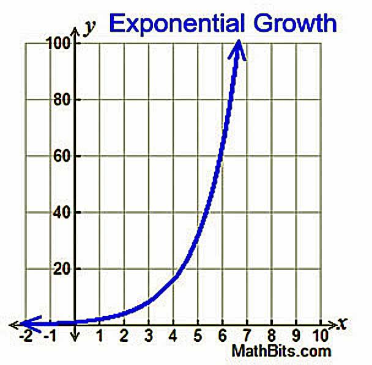
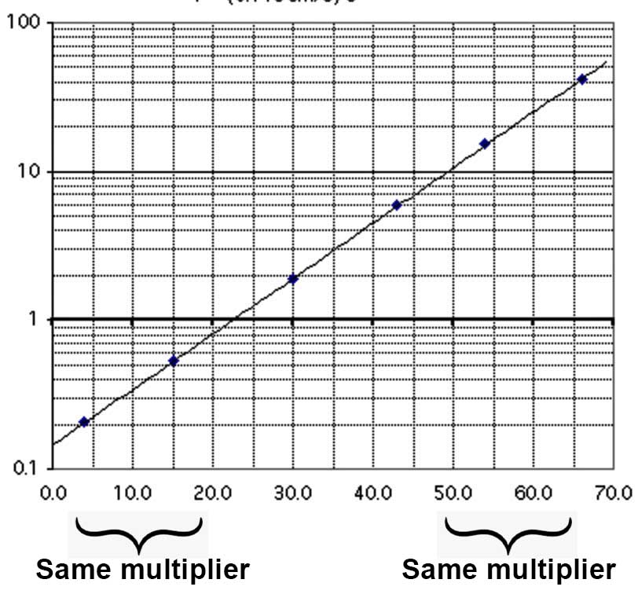

\( \myIndentB x_{k+1} = x_{k} + 2 \)
\( \myIndentB x_{k+1} = x_{0} + k \times 2 \)
\( \myIndentB x_{k+1} = x_{k} \times 1.2 \)
\( \myIndentB x_{k+1} = x_{0} \times 1.2^k \)
Relative change is called "Exponential Change"
The \( \mySize 1.2^k \) in \( \mySize x_{k+1} = x_{0} \times 1.2^k \) can be rewritten:
\( \myIndentC y = 1.2^k \)
\( \myIndentC ln(y) = ln(1.2^k) \)
\( \myIndentA \mbox{Apply } ln(b^c) = c \times ln(b) \)
\( \myIndentC ln(y) = k \times ln(1.2) \)
\( \myIndentA \mbox{Exponentiate both sides base } e \)
\( \myIndentC e ^ {ln(y)} = e ^ {k \times ln(1.2)} \)
\( \myIndentA \mbox{Simplify using } e ^ {ln(y)} = y \)
\( \myIndentC y = e ^ {k \times ln(1.2)} \)
\( \myIndentA \mbox{Substitute back } y = 1.2^k \)
\( \myIndentC 1.2^k = e ^ {k \times ln(1.2)} \)
Conclusion: Any change (e.g, the 1.2 or 20% growth above) can be viewed as or called "exponential change".
Relative Change Has Many Facets
Changes that literally grow relatively
Changes that we perceive relatively
Changes we choose to grow relatively
Changes we want to be reported relatively
(If span > 2 or 3 orders of magnitude,
growth mode probably is relative.


########################################################## ########################################################## ##########################################################
***** Add compound interest? *****
{kind=link}